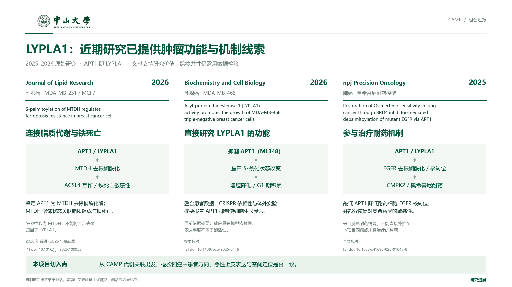

<!doctype html><meta charset="utf-8"><title>LYPLA1 近期研究进展</title><style>body{margin:0;background:#e9eeeb;color:#183d34;font-family:"Microsoft YaHei",sans-serif}nav{padding:18px 4%;background:white}main{max-width:1680px;margin:24px auto}img{width:100%;display:block}a{color:#00553b}section{padding:20px;background:white;line-height:1.8}li{margin:10px 0}</style><nav>LYPLA1 · 近期研究进展　<a href="LYPLA1_近期研究进展.pdf">PDF</a>　<a href="LYPLA1_近期研究进展.png">高清 PNG</a>　<a href="LYPLA1_近期研究进展.svg">SVG</a></nav><main><section><b>原始论文与证据范围</b><ol><li><a href="https://pmc.ncbi.nlm.nih.gov/articles/PMC12794514/" target="_blank">Journal of Lipid Research · 2026 — S-palmitoylation of MTDH regulates ferroptosis resistance in breast cancer cell</a>（全文核对）</li><li><a href="https://www.sciencedirect.com/org/science/article/pii/S0829821126000158" target="_blank">Biochemistry and Cell Biology · 2026 — Acyl-protein thioesterase 1 (LYPLA1) activity promotes the growth of MDA-MB-468 triple-negative breast cancer cells</a>（摘要核对）</li><li><a href="https://www.nature.com/articles/s41698-025-01048-8" target="_blank">npj Precision Oncology · 2025 — Restoration of Osimertinib sensitivity in lung cancer through BRD4 inhibitor-mediated depalmitoylation of mutant EGFR via APT1</a>（全文核对）</li></ol><p>机制示意为原文结果概括，不是本项目已验证的机制。BCB 依据摘要；JLR 正式卷期为 2026 年，2025 年底在线。</p></section></main>